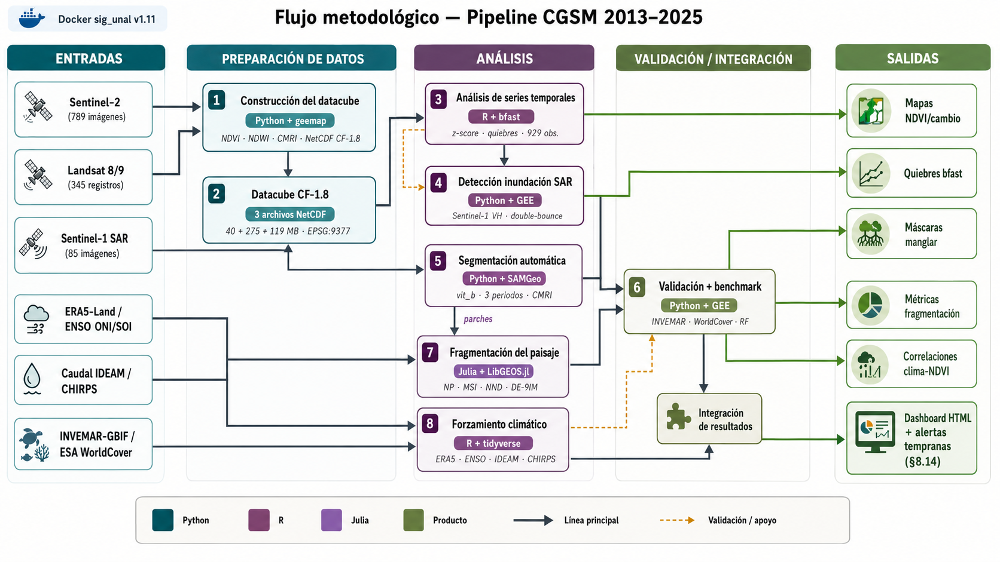

2026-05-25
Universidad Nacional de Colombia Facultad de Ciencias Agrarias
Programación en SIG, Proyecto Final
Repositorio: https://github.com/linaq11/proyecto-cgsm-curso
,
La Ciénaga Grande de Santa Marta (CGSM), sitio Ramsar y Reserva de Biosfera UNESCO, constituye el complejo lagunar costero más extenso de Colombia y ha experimentado ciclos recurrentes de degradación y recuperación del manglar asociados con la hipersalinización crónica y la variabilidad climática del ciclo El Niño-Oscilación del Sur (ENSO). Este estudio caracterizó la dinámica espaciotemporal del manglar entre 2013 y 2025 sobre los 835,3 km² del área protegida oficial, conformada por el Santuario de Fauna y Flora CGSM y el Vía Parque Isla de Salamanca, mediante un pipeline multilenguaje desarrollado en Python, R y Julia. El flujo integró una serie mensual de 929 observaciones de NDVI derivadas de Landsat 8 y Sentinel-2, segmentación guiada por prompts con SamGeo, métricas de fragmentación del paisaje, detección de inundación con Sentinel-1 SAR y análisis de cuatro forzamientos climático-hidrológicos: ERA5-Land, índices ENSO de NOAA, caudal IDEAM y precipitación CHIRPS. Los resultados identificaron quiebres estructurales mediante BFAST en 2016 y un evento puntual de mortandad del manglar en septiembre de 2020, asociado con 43,08 km² de inundación bajo dosel. Entre el periodo de degradación y el estado actual, la cobertura clasificada como manglar se redujo de 12.426 ha a 4.037 ha, mientras que la estructura del paisaje mostró consolidación, con aumento del área media de parche de 157 ha a 269 ha y recuperación del NDVI mediano del dosel de 0,60 a 0,80 desde 2022. La validación doble del clasificador por umbrales obtuvo F1-scores de 0,583 frente a la cartografía oficial INVEMAR 1:25.000 y de 0,548 frente a ESA WorldCover v200, mientras que el clasificador Random Forest elevó estos valores a 0,826 y 0,889, respectivamente. Finalmente, el pipeline incorporó un módulo operativo de alertas tempranas como base para un futuro Gemelo Digital de la CGSM, clasificando las ocho estaciones de monitoreo en cinco estables, tres en alerta y ninguna en estado crítico al cierre del periodo evaluado.
Palabras clave: Ciénaga Grande de Santa Marta, manglar, NDVI, bfast, Sentinel-2, Landsat 8, Sentinel-1 SAR, SamGeo, Random Forest, ENSO, La Niña, Google Earth Engine, pipeline multilenguaje.
La Ciénaga Grande de Santa Marta (CGSM) es el sistema lagunar costero más extenso de Colombia y uno de los humedales de mayor relevancia ecológica en América Latina. Sus coberturas de manglar cumplen funciones clave de regulación hídrica, protección costera, almacenamiento de carbono azul y sostenimiento de la pesca artesanal. Reconocida como sitio Ramsar desde 1998 y Reserva de Biosfera UNESCO desde 2000, la CGSM ha experimentado desde la década de los noventa una degradación severa y cíclica de su cobertura de manglar. Entre las presiones dominantes se encuentran la interrupción del flujo hídrico tras la construcción de la carretera Ciénaga-Barranquilla, la hipersalinización resultante, la deforestación asociada con actividades agropecuarias y la variabilidad climática vinculada al ciclo El Niño-Oscilación del Sur (ENSO), especialmente durante episodios de La Niña.
Aunque la reapertura de canales hidráulicos entre 1996 y 1998 promovió una recuperación parcial del sistema, la dinámica ecológica de la CGSM continúa siendo inestable. Los ciclos de degradación y recuperación del manglar no solo implican cambios en la extensión de la cobertura, sino también en su vigor espectral, fragmentación espacial, estructura bajo dosel y exposición a procesos de inundación. Por ello, su monitoreo requiere enfoques capaces de integrar información óptica, radar, climática e hidrológica en series temporales consistentes.
En Colombia, el INVEMAR ha realizado monitoreos sistemáticos de la CGSM, documentando los ciclos de degradación y recuperación del manglar mediante estaciones permanentes de campo y cartografías de referencia. Estos antecedentes han sido fundamentales para comprender la evolución ecológica del sistema; sin embargo, persiste la necesidad de complementarlos con flujos automatizados que integren series temporales densas, segmentación automática, métricas espaciales de fragmentación y forzamientos climático-hidrológicos. En este contexto, la combinación de sensores ópticos como Landsat 8 y Sentinel-2 con información radar de Sentinel-1 SAR permite avanzar desde una lectura estática de cobertura hacia un monitoreo multitemporal del sistema.
Este estudio desarrolla un pipeline multilenguaje en Python, R y Julia para caracterizar la dinámica espaciotemporal del manglar de la CGSM entre 2013 y 2025, sobre los 835,3 km² del área protegida oficial conformada por el Santuario de Fauna y Flora CGSM y el Vía Parque Isla de Salamanca. El flujo integra series temporales de índices espectrales, segmentación guiada por prompts con SamGeo, métricas de fragmentación del paisaje, detección de inundación con Sentinel-1 SAR y análisis de forzamientos climático-hidrológicos mediante ERA5-Land, índices ENSO de NOAA, caudal IDEAM y precipitación CHIRPS.
La justificación metodológica del enfoque radica en que cada lenguaje aporta una fortaleza específica dentro del flujo de trabajo. Python centraliza la adquisición y procesamiento geoespacial en Google Earth Engine, la segmentación con SamGeo, la construcción de datacubes, la clasificación supervisada y la generación del dashboard; R permite desarrollar análisis de series temporales y detección de quiebres estructurales con BFAST; y Julia facilita el cómputo geométrico y topológico sobre los polígonos segmentados. Esta integración permite construir un flujo reproducible, interoperable y adaptable a otros humedales costeros tropicales.
La caracterización espaciotemporal del manglar tiene además un valor práctico para la gestión ambiental y la respuesta ante crisis hidroclimáticas. En febrero de 2026 se firmó el Plan de Manejo Ambiental del sitio Ramsar Sistema Delta Estuarino del Río Magdalena-CGSM, con vigencia de diez años, orientado al seguimiento ambiental permanente del humedal. En este contexto, el enfoque del estudio se articula con la orientación del acelerador Ready for Impact, desarrollado en alianza con Twilio y NASA Lifelines, al emplear datos satelitales, SIG y sensores remotos para fortalecer la respuesta ante crisis. La crisis analizada corresponde a las perturbaciones hidroclimáticas que afectan la funcionalidad del manglar de la CGSM, un ecosistema estratégico para la pesca artesanal, la regulación hídrica, la protección costera y la resiliencia socioambiental de las comunidades del corredor Tasajera-Pueblo Viejo-Buenavista.
De esta manera, el estudio busca aportar una base operativa para el monitoreo del manglar de la CGSM, articulando clasificación de cobertura, análisis de cambio, fragmentación, inundación y forzamientos hidroclimáticos. Además, el flujo propuesto se plantea como un componente inicial para el desarrollo de un futuro Gemelo Digital costero, orientado a apoyar el seguimiento ambiental, la generación de alertas tempranas y la toma de decisiones en el marco de la gestión del sitio Ramsar.
El monitoreo satelital del manglar ha avanzado de manera significativa durante las últimas tres décadas. Giri et al. (2011) produjeron uno de los primeros inventarios globales modernos a partir de un mosaico Landsat circa 2000, con resolución de 30 m, mientras que Hamilton y Casey (2016) extendieron la observación mediante el conjunto CGMFC-21, que ofrece una serie anual continua para el periodo 2000–2012. Con Sentinel-2, la resolución espacial de 10 m y la revisita de 5 días han permitido construir series temporales más densas, capaces de capturar la variabilidad estacional e interanual de la cobertura vegetal costera. Sobre esta base, Raza et al. (2024) demostraron que el análisis de NDVI Sentinel-2 en GEE permite detectar tendencias de deterioro del manglar incluso cuando la extensión del bosque se mantiene estable. Por tanto, las estimaciones de cobertura deben complementarse con indicadores de condición fisiológica.
En cuanto a los índices espectrales orientados a mejorar la discriminación del manglar, Gupta et al. (2018) propusieron el Combined Mangrove Recognition Index, CMRI = NDVI − NDWI, donde NDWI corresponde al Índice de Diferencia Normalizada de Agua. Este índice alcanzó una exactitud de clasificación del 73 %, frente al 56 % obtenido con el NDVI estándar para diferenciar manglar de otras coberturas en ambientes estuarinos. A escala global, el Global Mangrove Watch v3.0 de JAXA, desarrollado por Bunting et al. (2022), constituye una de las referencias más completas para el periodo 1996–2020 mediante detección de cambios sobre series SAR en banda L. A escala nacional, INVEMAR (2020) generó la cartografía oficial colombiana de manglares a escala 1:25.000, mediante clasificación supervisada en GEE a partir de imágenes ópticas y radar. Ambas cartografías sirven como referencia para la validación de este estudio.
La literatura global, construida principalmente sobre archivos Landsat, ha atribuido la pérdida de manglar a la presión antrópica directa. Goldberg et al. (2020) reportaron que el 62 % de la pérdida mundial entre 2000 y 2016 está asociada con cambios de uso del suelo, con cerca del 80 % concentrado en seis países del sudeste asiático. Sin embargo, este marco puede subestimar procesos de pérdida gradual en otras regiones. Para Colombia, Murillo-Sandoval et al. (2022) reconstruyeron 36 años de cobertura de manglar mediante LandTrendr y documentaron una disminución de 48.000 ha, de las cuales 38.469 ± 2.829 ha correspondieron a degradación interna, entendida como transiciones de manglar denso hacia otra vegetación, y no necesariamente como conversión abrupta a usos antrópicos. Esta diferencia entre el patrón global y el caso colombiano justifica el uso de trayectorias temporales densas, capaces de capturar estados intermedios entre cobertura plena y pérdida completa.
La adopción de Google Earth Engine, GEE, para el monitoreo de manglares se ha acelerado por su capacidad de procesar grandes volúmenes de imágenes sin requerir infraestructura computacional local. Selvaraj y Gallego-Pérez (2023) aplicaron GEE al mapeo del Pacífico colombiano mediante la integración de datos ópticos Landsat y SAR ALOS-2/PALSAR-2 con un clasificador Random Forest. De forma similar, Yancho et al. (2020) desarrollaron la Google Earth Engine Mangrove Mapping Methodology, GEEMMM, una herramienta abierta orientada a gestores costeros sin formación especializada, validada sobre el litoral de Myanmar. Este estudio adopta una arquitectura comparable, basada en procesamiento íntegro en GEE, máscaras de nube y composiciones temporales, pero sustituye la clasificación supervisada principal por umbrales NDVI y CMRI calibrados localmente, complementados con una evaluación comparativa mediante Random Forest. La validación se desarrolló siguiendo las recomendaciones de Olofsson et al. (2014), centradas en diseño de muestreo probabilístico, matriz de error expresada en proporciones de área e intervalos de confianza para superficies de cambio.
El antecedente local más cercano corresponde a Vinasco et al. (2020), quienes cuantificaron cambios de cobertura en la Ciénaga Grande de Santa Marta entre 2013 y 2018 a partir de escenas Landsat 8 y un clasificador Random Forest sobre clases CORINE Land Cover. Aunque este estudio representa un avance importante para el análisis multitemporal de coberturas en la CGSM, no aisló la cobertura de manglar como clase específica ni abordó de manera integrada su condición fisiológica, fragmentación espacial, exposición a inundación bajo dosel y relación con forzamientos hidroclimáticos. De forma complementaria, las cartografías oficiales de INVEMAR y los productos globales como Global Mangrove Watch y ESA WorldCover ofrecen referencias fundamentales para la validación, pero no sustituyen un análisis local orientado a reconstruir trayectorias de degradación y recuperación con resolución temporal densa.
En consecuencia, el vacío metodológico que aborda este trabajo no radica en la ausencia de información sobre manglares en la CGSM, sino en la falta de un flujo reproducible que articule, en una misma arquitectura, observación óptica, radar, segmentación automática, métricas de fragmentación, análisis de quiebres temporales y forzamientos climático-hidrológicos. La aparición de modelos fundacionales como Segment Anything Model, SAM, y su adaptación geoespacial mediante SamGeo, abre una oportunidad para complementar las clasificaciones convencionales con segmentación guiada por prompts. En paralelo, el concepto de Gemelo Digital aplicado a humedales ofrece un marco para integrar observación de la Tierra, modelos físicos, aprendizaje automático y alertas tempranas en la gestión adaptativa de ecosistemas. Bajo este enfoque, el presente proyecto se plantea como un componente operativo inicial para el seguimiento reproducible del manglar de la CGSM, conectando series satelitales, segmentación espacial, fragmentación del paisaje y forzamientos hidroclimáticos.
Desarrollar un pipeline multilenguaje para el monitoreo del manglar de la Ciénaga Grande de Santa Marta entre 2013 y 2025.
Figura 1: Localización del área de estudio. (a) Ubicación del departamento del Magdalena en Colombia; (b) ciudades de referencia y AOI acotado; (c) composición Sentinel-2 RGB 2024–2025 sobre el AOI acotado, con estaciones INVEMAR-GBIF y cobertura de manglar segmentada por SamGeo.
El área de estudio comprende la Ciénaga Grande de Santa Marta (CGSM) y su zona de influencia costera, ubicada en el departamento del Magdalena, Colombia, entre aproximadamente 10°20' N–11°05' N y 74°10' W–74°55' W. El proyecto considera dos delimitaciones anidadas de Área de Interés (AOI). La primera, denominada AOI preliminar, cubre 5.073 km² y fue utilizada únicamente como línea base en la iteración inicial. La segunda, denominada AOI acotado, cubre 835,3 km² y corresponde a la unión de los polígonos oficiales del Santuario de Fauna y Flora CGSM, con 26.810 ha, y del Vía Parque Isla de Salamanca, extraídos del Registro Único Nacional de Áreas Protegidas (RUNAP).
Todos los resultados reportados en el cuerpo del informe se sustentan en el AOI acotado, ya que el AOI preliminar incluía vegetación riberana, salitrales y zonas agropecuarias que inflaban las estimaciones de manglar potencial y reducían la comparabilidad con las cartografías oficiales de manglar. Además, cerca del 51 % del AOI acotado corresponde a lámina de agua permanente o estacional según el Joint Research Centre (JRC) Global Surface Water 1984–2021, lo que justifica el uso del filtro NDVI > 0,4 para aislar la cobertura de manglar en los análisis de vegetación.
Para el análisis de series temporales se definieron ocho estaciones de muestreo: cinco con coordenadas exactas obtenidas del conjunto de datos del INVEMAR publicado en GBIF y tres estaciones complementarias seleccionadas sobre cobertura de manglar verificada mediante NDVI > 0,4 en composiciones Sentinel-2 de 2024. Estas estaciones permiten representar el Complejo de Pajarales y la zona de rehabilitación hidrológica asociada al Caño Clarín. Las coordenadas y la naturaleza espectral de las estaciones se reportan en la Tabla 1.
Tabla 1: Estaciones de muestreo del proyecto sobre el AOI acotado, con coordenadas WGS84 y naturaleza espectral.
| Estación | Tipo | Naturaleza espectral | Latitud (N) | Longitud (W) |
| Isla Boquerón | INVEMAR-GBIF | Limnológica | 10,962 | 74,298 |
| Punta Cerro | INVEMAR-GBIF | Limnológica | 10,973 | 74,283 |
| Punta Chino | INVEMAR-GBIF | Limnológica | 10,912 | 74,305 |
| Río Sevilla | INVEMAR-GBIF | Limnológica | 10,880 | 74,325 |
| Caño Palos | INVEMAR-GBIF | Manglar | 10,758 | 74,471 |
| CP Aguas Negras | Complementaria | Manglar | 10,810 | 74,608 |
| CP Luna | Complementaria | Manglar | 10,908 | 74,588 |
| Caño Clarín | Complementaria | Manglar | 10,996 | 74,626 |
Los datos del proyecto provienen de trece fuentes agrupadas en seis categorías: óptica satelital (Landsat 8/9, Sentinel-2), radar satelital (Sentinel-1), raster cartográfico de referencia (ESA WorldCover, JRC Global Surface Water), modelo digital de elevación (SRTM v3), datos vectoriales de campo (INVEMAR-GBIF y cartografía INVEMAR 1:25.000), índices climáticos (ERA5-Land, ENSO ONI/SOI, CHIRPS) e hidrométricos (caudal IDEAM). Siguiendo la declaración cuádruple de resolución recomendada por Gomarasca (2010), las colecciones satelitales se caracterizan por sus resoluciones espacial y temporal; las fuentes in situ e índices climáticos, por su frecuencia y proveedor institucional. La Tabla 2 sintetiza los trece conjuntos de datos.
Tabla 2: Fuentes de datos utilizadas en el pipeline para el monitoreo de manglar.
| Dataset | Tipo | Res. espacial | Frec. temporal | Periodo | Uso en el proyecto |
| Sentinel-2 MSI L2A (ESA) | Óptico satelital | 10–60 m | 5 días | 2018–2025 (789 img) | Índices espectrales, RGB para SamGeo |
| Landsat 8/9 OLI (NASA/USGS) | Óptico satelital | 15–30 m | 8 días | 2013–2017 (345 reg) | Serie NDVI complementaria |
| Sentinel-1 SAR (ESA) | Radar satelital | 10 m | 6–12 días | 2020 (85 img) | Detección de inundación bajo dosel |
| SRTM v3 (NASA) | DEM | 30 m | Única | 2000 | Restricción de elevación (<10 m) |
| ESA WorldCover v200 | Raster cartográfico | 10 m | Anual | 2021 | Validación de clasificación |
| INVEMAR Manglares 1:25.000 | Vector cartográfico | 1:25.000 | Única | 2020 | Validación de clasificación |
| JRC Global Surface Water | Raster | 30 m | Anual | 1984–2021 | Transiciones hídricas |
| Global Flood Database | Raster eventos | 250 m | Por evento | 2001–2017 (16 evt) | Inventario histórico inundaciones |
| INVEMAR-GBIF estaciones | Vector puntual | — | Anual | 2013–2019 (376 reg) | Coordenadas + estructura forestal |
| ERA5-Land (ECMWF) | Reanálisis climático | 9 km | Mensual | 2013–2025 | Forzamiento climático local |
| ENSO ONI/SOI (NOAA CPC) | Índice climático | — | Mensual | 2013–2025 | Forzamiento ENSO global |
| Caudal IDEAM (DHIME) | Hidrométrico in situ | Puntual | Mensual | 2013–2025 (274 obs) | Forzamiento hidrológico |
| CHIRPS v2.0 (CHG) | Precipitación satelital | 5,5 km | Mensual | 2013–2025 | Forzamiento hídrico cuencas |
La mayoría de los datasets se obtuvieron mediante las colecciones públicas de Google Earth Engine; los registros hidrométricos del IDEAM se descargaron del portal DHIME y los índices ENSO se obtuvieron directamente del Climate Prediction Center de la NOAA. La cartografía oficial colombiana de manglares 1:25.000 se consultó a través del servicio ArcGIS REST de INVEMAR (2020); los datos de estructura forestal de las estaciones permanentes están publicados en GBIF (Beltrán et al., 2022). La biblioteca SamGeo (Wu y Osco, 2023) se aplicó como herramienta de procesamiento sobre estos datos en la fase de segmentación (§7.4).
El proyecto se organizó en cinco fases técnicas (§7.2-§7.5 y §7.7) y un módulo transversal de forzamiento climático (§7.6), ejecutadas en el contenedor Docker sig_unal v1.11 con Python, R y Julia, sobre el AOI acotado (835,3 km²) y la serie completa Landsat 8 + Sentinel-2 2013–2025.
La distribución funcional del pipeline multilenguaje se organizó según las fortalezas de cada entorno. Python centralizó la adquisición de datos en Google Earth Engine, la segmentación con SamGeo, la construcción de datacubes con xarray, el clasificador Random Forest y la generación del dashboard. R se empleó para la detección de quiebres con BFAST, el manejo del cubo stars y las réplicas estadísticas de los análisis ENSO y caudal IDEAM. Julia se utilizó para el cómputo geométrico sobre los polígonos, incluyendo métricas de fragmentación, cálculo de áreas en EPSG:9377 y predicados topológicos DE-9IM con LibGEOS.jl. La Tabla 3 sintetiza esta distribución funcional.
Tabla 3: Distribución de tareas entre Python, R y Julia, con sus librerías y notebooks/scripts principales.
| Lenguaje | Función técnica | Librerías clave | Notebooks / scripts principales |
| Python | Adquisición GEE, segmentación SAM, Random Forest, datacubes, dashboard | geemap, samgeo, xarray, rioxarray, rasterio, geopandas, folium, cdsapi | 01_gee_acquisition, 02_time_series, 03_segmentation_acotado, 05_flooding_nasa_acotado, 07_era5_clima, 11_random_forest_benchmark, 12_sentinel1_sar_serie |
| R | Detección de quiebres bfast, cubo stars, réplicas estadísticas | bfast, stars, sf, terra, tidyverse | src/R/03_bfast_ndvi.R, src/R/05_stars_cubo.R, notebooks/02b_bfast_ndvi_R.ipynb, 11b_indices_enso_noaa_R, 12c_caudal_ideam_R |
| Julia | Métricas de fragmentación, topología DE-9IM (Dimensionally Extended 9-Intersection Model, modelo formal que clasifica relaciones espaciales entre geometrías como intersección, contención o disjunción), cómputo geométrico | GeoJSON.jl, DataFrames.jl, LibGEOS.jl, Statistics | src/julia/04_fragmentacion.jl, notebooks/04c_topologia_julia, 14_validacion_trilingual |
En la primera fase se construyeron tres datacubes multitemporales sobre la CGSM. Dos se generaron a partir de imágenes Sentinel-2 SR Harmonized del periodo 2018–2025, filtradas por nubosidad inferior al 20 %: uno con composiciones RGB por periodo y otro con composiciones trimestrales de los índices NDVI, NDWI y CMRI. El tercer datacube se construyó con composiciones Landsat 8/9 para el periodo 2013–2025, incorporando los mismos índices espectrales.
Los productos finales se almacenaron en formato NetCDF con convenciones CF-1.8, reproyectados a EPSG:9377 y remuestreados a 30 m. Este formato permitió la lectura interoperable desde Python, R y Julia sin reconsultar la API de Google Earth Engine. A partir del datacube trimestral se calculó la diferencia espacial entre la mediana de NDVI del estado actual, julio de 2024 a junio de 2025, y la del periodo de degradación, julio a diciembre de 2020, con el fin de representar zonas de ganancia o pérdida relativa de vigor vegetativo.
Figura 2: Cambio en la mediana de NDVI entre el estado actual (2024–2025) y el periodo de degradación (2020 H2) sobre el AOI acotado. Azul indica ganancia de vigor (regeneración); rojo indica pérdida. Coordenadas en metros (EPSG:9377, MAGNA-SIRGAS).
Se extrajeron series temporales mensuales de NDVI sobre las ocho estaciones de muestreo mediante un buffer de 500 m. La serie combinó Landsat 8 Collection 2 para el periodo 2013–2017 y Sentinel-2 SR Harmonized para 2018–2025, con un total de 929 observaciones. Sobre cada estación se calculó el z-score temporal para identificar anomalías significativas, definidas como meses con z < −2.
Posteriormente, se aplicó BFAST en R para detectar quiebres estructurales en la tendencia de largo plazo. Se evaluaron los parámetros h = 0,15 y h = 0,10, equivalentes a ventanas mínimas aproximadas de 18 y 12 meses, respectivamente. Los resultados generales y la detección refinada sobre las estaciones de manglar denso se presentan en la sección 8.1.
Se aplicó SamGeo sobre las composiciones RGB de tres periodos de referencia: degradación 2020 H2, recuperación 2022 H1 y estado actual 2024–2025. Las composiciones fueron remuestreadas de 10 m a 30 m debido a restricciones de memoria durante el procesamiento. Se utilizó el backbone vit_b, por su menor demanda computacional frente a vit_h.
Las máscaras resultantes se vectorizaron y se clasificaron como manglar o no manglar a partir del CMRI medio de cada parche. Posteriormente, se aplicó un filtro de área entre 1 ha y 5.000 ha para excluir objetos espurios por fuera del rango ecológico esperado.
Sobre los parches de manglar vectorizados se calcularon, en Julia, métricas de ecología del paisaje para los tres periodos analizados. Estas incluyeron número de parches, densidad de parches por 1.000 ha, área media de parche, índice de forma medio, distribución por clases de tamaño y distancia media al vecino más cercano. El índice de forma medio, MSI, se calculó como el perímetro dividido entre dos veces la raíz cuadrada de π por el área, mientras que la distancia media al vecino más cercano, NND, se utilizó como indicador de conectividad espacial.
El cálculo de áreas se realizó sobre geometrías reproyectadas a EPSG:9377, sistema oficial colombiano. Además, se aplicaron predicados topológicos DE-9IM, específicamente intersects y contains, para identificar parches recortados por el límite del AOI y evaluar la relación espacial entre las estaciones de monitoreo y los parches segmentados.
El acoplamiento climático se evaluó con cuatro fuentes complementarias: ERA5-Land, índices ENSO ONI y SOI de NOAA, caudal IDEAM-DHIME y precipitación CHIRPS. Estas variables se cruzaron con las anomalías NDVI expresadas como z-score, considerando rezagos de cero a tres meses y diferenciando las estaciones según su naturaleza espectral, manglar o limnológica.
Como validación local del flujo Python-GEE, se construyó un cubo stars en R a partir de los TIF trimestrales de Sentinel-2 previamente descargados. La serie extraída por estación reprodujo los resultados obtenidos en GEE, con ρ > 0,95 y RMSE < 0,05 unidades de NDVI.
Para el evento de septiembre de 2020 se ejecutó una detección de inundación con Sentinel-1 SAR en banda VH y modo IW. El análisis comparó el backscatter medio del periodo seco de referencia, enero a marzo de 2020, frente al periodo de inundación, septiembre a octubre de 2020. Se identificó agua abierta cuando la diferencia SAR entre inundación y periodo seco fue inferior a −3 dB, asociada con reflexión especular, y manglar inundado bajo dosel cuando la diferencia fue positiva, atribuible a dispersión de doble rebote agua-tronco.
La clasificación por umbrales espectrales se validó sobre el AOI acotado contra ESA WorldCover v200 y la cartografía oficial INVEMAR 1:25.000, utilizando la clase manglar como referencia binaria. La comparación se realizó píxel a píxel mediante matrices de confusión calculadas en Google Earth Engine. La regla evaluada integró NDVI > 0,70, elevación SRTM < 10 m y distancia al agua JRC < 3 km.
Para cuantificar la mejora esperable frente a la regla determinística, se implementó un clasificador Random Forest en GEE sobre la misma imagen mediana Sentinel-2 del periodo actual y el mismo AOI. El entrenamiento utilizó 1.000 puntos estratificados sobre la cartografía INVEMAR, distribuidos en 500 puntos de manglar y 500 de no manglar, con validación cruzada K-fold igual a 5. El modelo se configuró con 100 árboles y 15 variables predictoras: bandas reflectivas de Sentinel-2, índices espectrales, elevación SRTM y distancia al agua JRC.
Finalmente, los productos del proyecto se integraron en un dashboard HTML con capas temáticas sobre el AOI acotado, incluyendo mapas de NDVI, cambio de vigor, clasificación de manglar, inundación SAR, estaciones de monitoreo y cartografías de referencia.

Figura 3: Flujo metodológico del proyecto: cinco fases técnicas más un módulo transversal de forzamiento climático, ejecutadas dentro del contenedor Docker sig_unal v1.11 con validación cruzada entre Python, R y Julia.
El flujo metodológico completo se resume en la Figura 3, que integra las cinco fases técnicas y el módulo transversal de forzamiento climático. El detalle operativo de entradas, herramientas, lenguajes y salidas se presenta en el Anexo F.7.
Todo el flujo se ejecutó dentro del contenedor Docker sig_unal v1.11, con control de versiones en Git y GitHub. La configuración del entorno, las versiones de los componentes y los comandos de autenticación de servicios externos se documentan en los anexos técnicos.
El análisis de series temporales de NDVI sobre las ocho estaciones reveló 18 anomalías significativas (z < −2) durante 2013–2025, concentradas en tres eventos principales:
• Septiembre de 2020 — perturbación de mayor magnitud, coincidente con el inicio de La Niña 2020–2021 que provocó inundaciones prolongadas en el sistema lagunar.
• Marzo de 2018 — sobre las estaciones occidentales (Caño Clarín, CP Aguas Negras), probablemente por hipersalinización en época seca.
• 2016 — cuatro anomalías adicionales en VIPIS detectadas al extender la serie con Landsat 8, invisibles a Sentinel-2 sola.
Las estaciones con mayor variabilidad fueron Caño Palos y Caño Clarín; Punta Chino mostró la menor, consistente con su ubicación protegida en el borde suroriental del sistema.
A partir de estos hallazgos se seleccionaron tres periodos de referencia para la segmentación: degradación (julio–diciembre 2020), recuperación (enero–junio 2022) y estado actual (julio 2024 a junio 2025). Cada ventana de seis a doce meses representa una fase fenológica estable posterior a la disipación de la perturbación previa. El periodo "actual" se restringe a un único año hidrológico para evitar contaminarlo con La Niña 2023–2024 y debe leerse como instantánea del estado vigente, no como tendencia anualizada (criterio consistente con Bunting et al., 2022).
El listado individual de las 18 anomalías (estación, fecha, NDVI, z-score y sensor de origen) se reporta en el Anexo F.6.
El datacube trimestral CF-1.8 sobre el AOI acotado (Anexo F.10) permitió calcular una serie temporal del NDVI mediano restringida a los píxeles de manglar (NDVI > 0,4), evitando que la dinámica observada quedara enmascarada por el agua, las salinas y los arenales que también ocupan el polígono. La Figura 4 confirma el patrón identificado en las estaciones: el NDVI mediano osciló alrededor de 0,80 en condiciones normales, cayó a ~0,60 entre el segundo semestre de 2019 y el primer semestre de 2020 (sequía + inicio de La Niña 2020–2021) y volvió a estabilizarse en torno a 0,80 desde 2022.
Figura 4: Serie temporal del NDVI mediano del manglar sobre el AOI acotado (835 km²) entre 2018 y 2025, restringida a píxeles con NDVI > 0,4. Las franjas sombreadas marcan los tres periodos de referencia; la caída 2019–2020 coincide con la sequía y La Niña.
La aplicación de bfast sobre las series mensuales de NDVI combinadas Landsat 8 + Sentinel-2 (2013–2025, 12 años) detectó quiebres estructurales en 7 de las 8 estaciones con h = 0,15 y en las 8 estaciones con h = 0,10. El análisis previo basado únicamente en Sentinel-2 (2018–2025, 7 años) no detectó quiebres en ninguna estación, lo que confirma la importancia de contar con series temporales suficientemente largas.
El patrón dominante fue un quiebre generalizado en 2016, detectado en 7 de 8 estaciones entre abril y diciembre, coincidente con el evento El Niño 2015–2016 que provocó sequías prolongadas y estrés hídrico en el sistema lagunar.
Punta Cerro fue la estación más inestable, con tres quiebres a h = 0,10: noviembre de 2016 (El Niño), abril de 2020 (inicio de La Niña) y agosto de 2021 (recuperación post-La Niña). Isla Boquerón presentó un segundo quiebre en mayo de 2018 (transición post-El Niño) y VIPIS un segundo quiebre en marzo de 2022 (recuperación post-La Niña 2020–2021).
El detalle por estación de los quiebres en la serie combinada, fechas principales con y y el evento ENSO asociado, se reporta en el Anexo F.4 del documento complementario.
El análisis BFAST aplicado sobre las ocho estaciones de muestreo originales (Anexo F.4) incluye tanto estaciones asociadas a cobertura de manglar denso como estaciones limnológicas ubicadas sobre la lámina de agua del complejo lagunar central. La clasificación presentada en la Tabla 6 muestra que estas dos naturalezas espectrales responden a los forzamientos climáticos con signos opuestos (Anexo F.14). Por esta razón, aplicar BFAST sobre el promedio de las ocho estaciones puede enmascarar la señal específica del evento climático sobre el dosel forestal. Para refinar la atribución del episodio La Niña 2020–2021 sobre el manglar, se reejecutó BFAST únicamente sobre las cuatro estaciones que efectivamente representan cobertura de manglar denso: Caño Palos, Caño Clarín, CP Aguas Negras y CP Luna. Los resultados se reportan en la Tabla 4.
Tabla 4: Quiebres estructurales detectados por bfast sobre las cuatro estaciones de manglar real, periodo 2018–2025 (Sentinel-2 únicamente). Los quiebres se agrupan en tres bloques temporales coincidentes con eventos ENSO documentados en §8.4.
|
El análisis restringido al subconjunto de manglar denso confirmó la hipótesis central del informe sobre la relación entre el evento de mortandad de septiembre de 2020 y el forzamiento asociado a La Niña. Con un parámetro h = 0,15, BFAST detectó quiebres estructurales en febrero de 2020 y abril de 2021 en Caño Clarín, así como en julio de 2020 en Caño Palos. Estas dos estaciones se ubican en el Complejo de Pajarales, sector con alta exposición a la entrada del flujo del río Magdalena. En CP Aguas Negras y CP Luna, los quiebres se registraron en abril y enero de 2022, respectivamente, dentro del periodo de recuperación definido en la fase 2. Este resultado es coherente con INVEMAR (2024), que documenta que la regeneración natural en Aguas Negras puede verse afectada por la entrada excesiva de agua dulce y sedimentos.
Además, el análisis identificó un tercer bloque de quiebres entre octubre de 2023 y julio de 2024: CP Aguas Negras en octubre de 2023, y Caño Palos y CP Luna en julio de 2024. Este patrón coincide con el episodio El Niño 2023–2024 observado en la serie ONI (Figura 5), el cual no había sido evidenciado en el análisis previo sobre las ocho estaciones. En consecuencia, la restricción del análisis al subconjunto de manglar denso no solo mejora la detección del evento de 2020, sino que amplía la trazabilidad de la respuesta del manglar frente a fases ENSO contrastantes. La comparación entre ambos enfoques, ocho estaciones heterogéneas frente a cuatro estaciones de manglar denso, confirma la pertinencia de clasificar las estaciones según su naturaleza espectral antes de aplicar análisis de quiebres estructurales en series multitemporales.
La segmentación con SamGeo (vit_b, 30 m) sobre las composiciones RGB del AOI acotado generó las máscaras de cobertura sobre las que se sostienen los resultados de este estudio. El balance neto entre el periodo de degradación (2020) y el estado actual (2024–2025) arrojó 183,2 km² de pérdida y 259,2 km² de ganancia sobre una base estable de 690,9 km², equivalente a un cambio neto positivo de +76,0 km². La iteración previa sobre el AOI preliminar (5.073 km²) se conserva en el repositorio Git para trazabilidad y no sostiene las conclusiones (justificación del acotamiento en §5).
La reproyección al sistema oficial colombiano EPSG:9377 sustituyó la aproximación esférica por el cálculo directo del área en metros, por lo que las hectáreas reportadas a continuación son comparables con la cartografía base del IGAC.
Sobre el AOI acotado, las métricas de fragmentación (Tabla 5) describen una contracción del área clasificada con consolidación estructural simultánea. La cobertura total cayó de 12.425,6 a 4.037,0 ha y el número de parches pasó de 79 a 15 entre los tres periodos, pero el área media por parche creció de 157,3 a 269,1 ha: el paisaje se reorganizó en torno a unidades de manglar maduro más grandes y aisladas, mientras los parches pequeños quedaron por fuera del umbral espectral. El índice de forma medio (MSI) pasó de 0,51 a 1,46 (bordes más irregulares por regeneración natural no uniforme), y la distancia media al vecino más cercano (NND) aumentó de 1,10 a 2,39 km, evidenciando un aislamiento creciente.
Tabla 5: Métricas de fragmentación sobre AOI acotado (SFF CGSM + VPI Salamanca, 835 km²), calculadas en EPSG:9377. Los parches están filtrados al rango 1–5.000 ha y procesados en Julia descomponiendo MultiPolygon.
|
Antes de interpretar las cifras conviene aclarar el alcance temporal de cada periodo de referencia: la degradación corresponde al semestre julio–diciembre de 2020 y capturó la respuesta espectral del manglar durante el evento de mortandad asociado a La Niña; la recuperación corresponde al semestre enero–junio de 2022 y capturó la fase de regeneración temprana documentada por INVEMAR (2024); el periodo actual corresponde al ciclo anual julio 2024 a junio 2025 y constituye una instantánea del estado más reciente, no una tendencia post-recuperación estabilizada. La comparación entre los tres periodos debe leerse, por tanto, como una secuencia de tres estados puntuales y no como un análisis de tendencia: se requieren al menos dos ciclos anuales adicionales (2025–2026 y 2026–2027) para evaluar si el patrón observado en 2024–2025 corresponde a una contracción estable o a una fluctuación intermedia.
La contracción del área clasificada por umbrales no equivale a pérdida de cobertura del manglar. La Figura 2 muestra la diferencia de NDVI mediano entre el periodo actual y el de degradación: predominan tonos azules (ganancia de vigor vegetativo en los parches sobrevivientes), con tonos rojos concentrados en los bordes hipersalinos del Vía Parque y en sectores puntuales del Santuario asociados a las lagunas internas. La consolidación detectada por la fragmentación y la ganancia de vigor del NDVI son compatibles: el manglar se mantiene en menos parches pero más densos espectralmente. Por eso conviene reportar conjuntamente las métricas de fragmentación, las series temporales y el mapa de cambio NDVI.
El análisis topológico complementa estas cifras con dos lecturas. Primero, el predicado intersects (tolerancia 30 m) identificó una proporción creciente de parches truncados por la frontera del AOI: 35,3 %, 47,1 % y 53,3 % a lo largo de los tres periodos. Esto indica que los parches sobrevivientes se concentran en posiciones periféricas del Santuario y de la Vía Parque, donde el límite legal de protección se acerca a la costa o a las zonas agropecuarias. Segundo, el predicado contains aplicado a las ocho estaciones de monitoreo no devolvió parches que las envolvieran bajo el filtro 1–5.000 ha: las cuatro limnológicas están sobre cuerpos de agua y las cuatro de manglar denso quedan en píxeles de borde donde la segmentación produce parches inferiores al umbral. Por tanto, la representatividad espacial de las estaciones debe discutirse en términos de buffer y no de contenencia estricta.
El conteo detallado de parches totales y en borde por periodo se reporta en el Anexo F.5.
Al cruzar las ocho estaciones de muestreo con el AOI acotado (SFF CGSM + VPI Salamanca, 835,3 km²) emerge una asimetría que reorganiza la lectura de los resultados de la Fase 2: solo Caño Palos cae estrictamente dentro del área protegida, Caño Clarín y Río Sevilla quedan asociadas mediante buffer de 2 km, y las cinco restantes quedan fuera. Esta distribución no es un error de selección sino una característica de las estaciones INVEMAR-GBIF originales, diseñadas como puntos de monitoreo limnológico (calidad de agua y estructura del cuerpo lagunar) y por tanto ubicadas sobre la lámina de agua del sistema, no sobre el manglar. El NDVI mediano histórico (2013–2025) confirma esa naturaleza dual: las cuatro estaciones del costado oriental (Isla Boquerón, Punta Cerro, Punta Chino y Río Sevilla) presentan NDVI medianos entre 0,14 y 0,28, compatibles con superficies de agua o transición agua-borde; las cuatro estaciones sobre manglar (Caño Palos, Caño Clarín, CP Aguas Negras y CP Luna) presentan NDVI medianos entre 0,38 y 0,75, consistentes con cobertura vegetal densa (Tabla 6).
Tabla 6: Clasificación de las ocho estaciones de muestreo por naturaleza espectral y distancia al AOI.
|
Bajo esta diferenciación, las anomalías negativas detectadas en septiembre 2020 sobre las estaciones limnológicas (NDVI = −0,078 en Punta Cerro, NDVI = −0,018 en Isla Boquerón) reflejan principalmente la respuesta del cuerpo de agua al exceso hídrico y al arrastre de sedimentos, no mortalidad de manglar. En contraste, las anomalías detectadas en las estaciones de manglar (CP Aguas Negras con z = −2,50, Caño Clarín con z = −3,15) representan estrés real del dosel vegetal y son las que efectivamente miden el efecto de La Niña sobre la cobertura. Esta reorganización conceptual refuerza el argumento de que la mortandad de septiembre 2020 fue más severa de lo que sugiere la lectura uniforme de las ocho estaciones, ya que el evento se concentró en las que realmente capturan dinámica de manglar y no en las que dominan el agua superficial. La consecuencia metodológica es que todo análisis de correlación con forzamientos climáticos (ERA5, ENSO, caudal, CHIRPS) debe desagregarse por naturaleza espectral antes de promediar: el promedio agregado de las ocho estaciones cancela las dos señales y produce un |ρ| < 0,12 engañosamente bajo (§8.4).
El forzamiento climático se evaluó mediante cuatro fuentes complementarias: ERA5-Land, índices ENSO ONI y SOI de NOAA, caudal IDEAM-DHIME y precipitación CHIRPS. Estas variables se cruzaron con las anomalías de NDVI expresadas como z-score, considerando rezagos de cero a tres meses y diferenciando las estaciones según su naturaleza espectral, manglar o limnológica. Esta desagregación fue necesaria porque el promedio agregado de las ocho estaciones puede cancelar señales opuestas entre cuerpos de agua y cobertura de manglar.
En las cuatro estaciones de manglar, la anomalía de precipitación ERA5-Land presentó una correlación negativa débil con el NDVI en rezago de dos meses, con ρ = −0,123. Aunque la magnitud de la relación es baja, el signo es coherente con un posible efecto de precipitación excesiva sobre el dosel, asociado con inundación prolongada e hipoxia radicular. En contraste, las estaciones limnológicas mostraron una asociación positiva entre precipitación y NDVI, con ρ = +0,292, posiblemente relacionada con arrastre de sedimentos, nutrientes y vegetación acuática de borde. Esta diferencia de signo respalda la decisión metodológica de analizar separadamente estaciones de manglar y estaciones limnológicas.
Los índices ENSO permitieron contextualizar la variabilidad climática regional. La serie ONI y SOI mostró el evento El Niño 2015–2016, con ONI máximo de +2,75 y SOI mínimo de −3,6, así como el episodio sostenido de La Niña 2020–2022, durante el cual el ONI se mantuvo entre −0,5 y −1,2 durante casi dos años. El SOI mostró mayor capacidad explicativa que el ONI, con correlaciones entre +0,12 y +0,20 a través de los rezagos evaluados. En el manglar, el SOI presentó una correlación positiva con el NDVI, con ρ = +0,146 en rezago de dos meses.
Figura 5: Índices ENSO mensuales (ONI y SOI, NOAA CPC) sobre el periodo 2013–2025. Las franjas sombreadas marcan El Niño 2015–2016 y La Niña 2020–2022.
La diferencia entre el signo positivo del SOI y el signo negativo de la precipitación ERA5-Land no constituye una inconsistencia metodológica, sino que refleja la naturaleza no lineal de la respuesta ecológica del manglar. El ENSO representa el estado climático de fondo que modula el régimen hídrico regional, mientras que la precipitación local captura la intensidad puntual del aporte hídrico sobre el humedal. Así, un aumento sostenido del aporte de agua dulce puede favorecer el vigor del manglar al reducir la hipersalinización, pero un exceso localizado o persistente puede inducir inundación prolongada y estrés bajo dosel.
Las series de caudal IDEAM-DHIME complementaron esta lectura desde la dimensión fluvial. Las correlaciones entre caudal y NDVI fueron positivas en ambos grupos de estaciones, con magnitudes entre 0,04 y 0,27. Los valores más altos se registraron entre el caudal del río Magdalena y el NDVI del manglar con tres meses de rezago, con ρ = +0,256, y entre el caudal del río Aracataca y el NDVI del manglar con un mes de rezago, con ρ = +0,224. Este resultado es coherente con el papel del aporte de agua dulce en la reducción de la hipersalinización crónica de la CGSM.
Figura 6: Anomalía z-score del caudal mensual IDEAM para el río Magdalena en El Banco y el río Aracataca en Ganadería Caribe, 2013–2025. Los picos extremos (z > +2) ocurrieron en 2022, no en 2020.
La precipitación CHIRPS sobre las cuencas aportantes funcionó como validación independiente del patrón observado con IDEAM. La correlación más alta entre precipitación y NDVI del manglar se obtuvo para la cuenca alta-media del Magdalena con tres meses de rezago, con ρ_CHIRPS = +0,252, valor muy cercano al observado con el caudal IDEAM del Magdalena, ρ_IDEAM = +0,256. En la vertiente noroccidental de la Sierra Nevada de Santa Marta, CHIRPS también presentó su mayor correlación en el mismo rezago, con ρ = +0,281. Esta convergencia entre fuentes independientes sugiere que el aporte hídrico sostenido se asocia positivamente con el vigor espectral del manglar en escalas de uno a tres meses.
La integración de ERA5-Land, ENSO, IDEAM-DHIME y CHIRPS permite matizar la interpretación del evento de septiembre de 2020. El episodio La Niña 2020–2021 generó un régimen regional de mayor humedad, detectable en los índices ENSO, en la precipitación local y posteriormente en las series de caudal. Sin embargo, la mortandad registrada en septiembre de 2020 no parece explicarse por un pico simultáneo de caudal fluvial, ya que las anomalías extremas de caudal se concentraron posteriormente, especialmente en 2022. En cambio, la evidencia apunta a un mecanismo más localizado, relacionado con precipitación sobre el humedal, inundación bajo dosel detectada por Sentinel-1 SAR y reducción posterior del NDVI en estaciones de manglar.
En conjunto, los resultados no establecen una causalidad estricta entre ENSO y la mortandad del manglar, pero sí muestran una relación temporal y estadística coherente entre la variabilidad hidroclimática, la inundación bajo dosel y la respuesta espectral del manglar. Esta lectura respalda el uso combinado de fuentes ópticas, radar, climáticas e hidrológicas para interpretar perturbaciones en humedales costeros tropicales.
La naturaleza multilenguaje del proyecto se verificó mediante cuatro validaciones cruzadas, orientadas a comprobar que los resultados no dependieran del entorno computacional utilizado:
La consistencia entre estas validaciones confirma que el uso combinado de Python, R y Julia responde a la fortaleza técnica de cada lenguaje y no a una dependencia metodológica del pipeline. Python se emplea principalmente para GEE y SamGeo; R, para BFAST y el análisis de series ecohidrológicas; y Julia, para la fragmentación espacial y los predicados DE-9IM mediante LibGEOS.jl. En conjunto, los resultados demuestran que el flujo de trabajo es interoperable, reproducible e independiente del entorno computacional.
La consulta a la Global Flood Database identificó 16 eventos de inundación históricos que intersecan el AOI acotado entre 2001 y 2017, de los cuales 14 registraron áreas de inundación superiores a cero. El evento de mayor magnitud ocurrió en febrero de 2005 con 299,2 km² inundados, el 35,8 % del área de estudio, seguido por los eventos de noviembre de 2004 (274,8 km²) y septiembre–diciembre de 2005 (239,4 km², 92 días de duración, el más prolongado del registro). Estos eventos coinciden con episodios ENSO documentados por el IDEAM, lo que confirma la vulnerabilidad del sistema lagunar a la variabilidad climática interanual. Las estaciones del borde oriental del complejo lagunar (Isla Boquerón, Punta Cerro, Punta Chino y Río Sevilla) registraron inundación en 9 o 10 de los 16 eventos. Caño Clarín, en cambio, solo fue afectado en uno, lo cual es consistente con su ubicación más alejada del cuerpo de agua principal.
El listado de los diez eventos con mayor área inundada (Inicio, Fin, Área en km² y Días de duración) se reporta en el Anexo F.8 del documento complementario.
Para el evento de septiembre–octubre de 2020, no registrado en la Global Flood Database (cuya cobertura termina en 2017), la detección con Sentinel-1 SAR (banda VH, modo IW) restringida al AOI identificó 15,93 km² de inundación en agua abierta (diferencia de backscatter < −3 dB) y 43,08 km² de inundación bajo dosel de manglar (diferencia positiva), para un total de 59,02 km² afectados, el 7,1 % del AOI acotado. El signo positivo del diferencial se interpreta como dispersión de doble rebote agua-tronco, patrón característico del manglar inundado en el que la señal radar rebota primero en la lámina de agua y luego en los troncos sumergidos. Este orden de magnitud es metodológicamente más sólido que el reportado en la iteración preliminar sobre el AOI completo no acotado (1.507,4 km²), donde se contabilizaban cambios espectrales en zonas no manglar de la Sierra Nevada y el interior continental que también producen diferencia SAR negativa por dinámica natural de la vegetación, sin relación con el evento La Niña. El cruce con las anomalías NDVI revela patrones diferenciados por estación que se discuten en el Anexo F.1.
Tabla 7: Extensión de la inundación detectada con Sentinel-1 SAR (septiembre–octubre 2020) sobre el AOI acotado SFF + VPI Salamanca.
|
El cruce estación por estación entre señal SAR, anomalía NDVI y frecuencia de inundación histórica de la Global Flood Database confirma que solo dos de las ocho estaciones se ubican estrictamente dentro del polígono protegido oficial: Caño Palos al sur del SFF y VIPIS sobre el Vía Parque. Ambas presentaron SAR diff positivo cercano a cero durante septiembre–octubre de 2020, sin inundación bajo dosel detectable.
Las seis estaciones restantes caen fuera del AOI acotado porque las estaciones INVEMAR-GBIF se diseñaron como puntos de monitoreo limnológico sobre la lámina de agua del sistema lagunar central, no sobre el manglar. El detalle completo del cruce por estación se reporta en el Anexo F.1.
El análisis de las transiciones del JRC Global Surface Water para el periodo 1984–2021, aplicado sobre el AOI acotado, muestra que las áreas de pérdida y ganancia de cuerpos de agua son del mismo orden de magnitud: 47,93 km² perdidos frente a 54,86 km² ganados. Esto da lugar a un balance neto positivo cercano a +7 km², coherente con un sistema humedal en proceso de rehabilitación hidrológica tras la reapertura de canales entre 1996 y 1998. El detalle completo de las nueve transiciones identificadas se presenta en el Anexo F.2.
La clasificación por umbrales espectrales se valida sobre el AOI acotado contra ESA WorldCover v200 (Zanaga et al., 2022), producto cartográfico global de 10 m de resolución que reporta cobertura de tierra para el año 2021 y que se acota a la clase 95 (manglar) como referencia binaria. La sustitución del Global Mangrove Watch por ESA WorldCover como cartografía de referencia obedece a que el catálogo público de sat-io en Google Earth Engine reorganizó el conjunto de datos GMW al momento de la entrega y los paths conocidos del GMW v3.0 (Bunting et al., 2022) dejaron de ser accesibles directamente desde el contenedor. WorldCover ofrece una alternativa con mayor resolución espacial nativa (10 m frente a los 25 m del GMW), validación independiente por la Agencia Espacial Europea y consistencia metodológica con la cartografía global de cobertura de tierra. El cálculo de la matriz de confusión se realiza directamente sobre los servidores de Earth Engine mediante reduceRegion con histograma de frecuencias, comparando pixel a pixel a 25 m de resolución la clasificación por umbrales (NDVI > 0,70, elevación SRTM < 10 m, distancia al agua JRC < 3 km) contra la clase 95 de WorldCover, sin necesidad de descargar los rasters al contenedor local.
Los resultados sobre el AOI acotado muestran una mejora marcada respecto a la iteración preliminar. El F1-score, entendido como la media armónica entre precisión y sensibilidad, aumentó de 0,442 a 0,548, equivalente a un incremento de 24 %. La precisión, entendida como valor predictivo positivo, pasó de 0,428 a 0,768, lo que indica una reducción importante de falsos positivos en los píxeles clasificados como manglar. La especificidad alcanzó 0,944, confirmando un alto desempeño en la identificación de la clase no manglar.
El acotamiento al área protegida oficial redujo los falsos positivos asociados con vegetación riberana, salitrales y zonas agropecuarias del AOI preliminar, coberturas que pueden compartir firma espectral con el manglar, pero que no necesariamente constituyen hábitat potencial dentro del polígono RUNAP. La sensibilidad, o recall, disminuyó ligeramente de 0,457 a 0,426, lo cual se atribuye al carácter conservador del umbral NDVI > 0,70, que deja por fuera manglar joven o degradado que WorldCover sí reconoce mediante su clasificador supervisado.
La exactitud global descendió de 0,899 a 0,788. Este comportamiento no debe interpretarse como una pérdida general de desempeño, sino como efecto del cambio en la prevalencia de la clase positiva: en el AOI preliminar, el manglar representaba cerca del 8 % del área, mientras que en el AOI acotado alcanza aproximadamente el 30 %. En consecuencia, la exactitud global deja de estar dominada por el acuerdo trivial sobre la clase mayoritaria y se vuelve una métrica más exigente, aunque menos favorable en términos numéricos.
Conviene precisar tres aspectos sobre el alcance de esta validación. En primer lugar, las métricas reportadas corresponden a la clasificación por umbrales espectrales con restricciones geofísicas, no a la salida directa de SamGeo. La segmentación automática genera polígonos sobre cualquier objeto espacialmente coherente del ráster RGB, incluidos cuerpos de agua y suelo desnudo, por lo que requiere un filtrado posterior mediante CMRI o NDVI medio antes de su comparación con la cartografía de referencia. En esta validación, dicho filtrado se representa de manera implícita al usar la clasificación por umbrales como producto evaluado.
En segundo lugar, WorldCover identificó aproximadamente 412 km² de manglar dentro del AOI acotado, mientras que el clasificador por umbrales identificó 229 km². Esta diferencia evidencia una subestimación sistemática asociada con el umbral conservador NDVI > 0,70. Como línea de ajuste, se propone evaluar umbrales entre 0,60 y 0,65, o complementar la regla con CMRI, con el fin de mejorar la sensibilidad sin comprometer de forma significativa la precisión alcanzada.
En tercer lugar, la diferencia residual entre ambas cartografías responde a la heterogeneidad espectral del manglar de la CGSM, a la presencia de vegetación riberana, pastizales inundables, salitrales con cobertura intermitente y a la diferencia metodológica entre un clasificador supervisado entrenado globalmente, como WorldCover, y una regla determinística por umbrales calibrada localmente. Esta distinción debe considerarse al comparar el F1-score obtenido con los rangos de 0,80 a 0,90 reportados por Selvaraj y Gallego-Pérez (2023) para flujos óptico-SAR supervisados con Random Forest.
Adicionalmente, se descargó la cartografía oficial colombiana de manglares a escala 1:25.000 publicada por INVEMAR (2020), mediante el servicio ArcGIS REST SIGMA/MANGLARES_COLOMBIA. De esta manera, el clasificador queda evaluado frente a dos referencias independientes: una global, supervisada y de 10 m de resolución, y una nacional, fotointerpretada y a escala 1:25.000. Esta doble validación permite establecer un techo metodológico realista para el F1-score esperable.
La cartografía de INVEMAR se rasterizó sobre la misma grilla de WorldCover a 25 m, con un preprocesamiento orientado a recuperar los nueve objetos MultiPolygon que concentran el 86 % del área total y que podrían descartarse silenciosamente mediante una rasterización ingenua. El detalle del procedimiento, implementado con rasterio.features.rasterize, all_touched=True y limpieza geométrica mediante shapely.validation.make_valid, se documenta en el Anexo E.
Tabla 8: Métricas de validación de la clasificación de manglar contra dos referencias cartográficas: INVEMAR 1:25.000 (2020) como referencia nacional oficial y ESA WorldCover v200 (Zanaga et al., 2022) como referencia global a 10 m. La columna línea base preliminar corresponde al AOI preliminar (5.073 km²); las dos columnas vigentes corresponden al AOI acotado SFF + VPI (835 km²). TP, FP, FN y TN denotan verdaderos positivos, falsos positivos, falsos negativos y verdaderos negativos a nivel de píxel.
|
Como medida de techo metodológico, también se reportó el acuerdo directo entre las dos cartografías de referencia. La matriz de confusión entre INVEMAR 1:25.000 y ESA WorldCover v200, calculada sobre el AOI acotado, arrojó un F1-score de 0,833 para la clase manglar, con precisión de 0,833, sensibilidad de 0,832 y especificidad de 0,928. Este resultado indica una alta convergencia entre ambas cartografías oficiales en la delimitación de la clase manglar dentro del polígono protegido, aunque no una correspondencia perfecta.
Por tanto, cualquier clasificador evaluado contra una u otra referencia debe interpretarse frente a una cota superior realista cercana a F1 = 0,83, y no frente a un valor ideal de 1,00. En este contexto, la cercanía entre los F1-score del clasificador del proyecto frente a INVEMAR y WorldCover, 0,583 y 0,548 respectivamente, muestra que el desempeño es consistente y no depende de manera crítica de la cartografía de referencia seleccionada.
Para cuantificar la mejora potencial al sustituir la regla determinística por un clasificador supervisado, se implementó un modelo Random Forest en GEE sobre la misma imagen mediana Sentinel-2 del periodo actual y el mismo AOI acotado, siguiendo el flujo documentado en el notebook 11_random_forest_benchmark.ipynb. Random Forest es un clasificador supervisado de ensamble que combina múltiples árboles de decisión y promedia sus predicciones, lo que ayuda a reducir el sobreajuste asociado con un árbol individual.
El entrenamiento utilizó 1.000 puntos estratificados sobre la cartografía oficial INVEMAR 1:25.000, distribuidos en 500 puntos de manglar y 500 de no manglar. La evaluación se realizó mediante validación cruzada K-fold con k = 5. Posteriormente, el clasificador se aplicó píxel a píxel y se evaluó contra las dos cartografías de referencia bajo condiciones experimentales equivalentes, con el fin de garantizar la comparabilidad con la clasificación por umbrales.
El modelo se configuró con 100 árboles y 15 variables predictoras: las diez bandas reflectivas de Sentinel-2, tres índices espectrales, NDVI, NDWI y CMRI, y dos variables auxiliares, elevación SRTM y distancia al agua JRC. Las métricas resultantes se reportan en la Tabla 9.
Tabla 9: Benchmark del clasificador Random Forest frente a la regla por umbrales espectrales. El RF alcanzó F1 medio = 0,931 ± 0,017 en validación cruzada K-fold = 5 y se evaluó píxel a píxel sobre n = 10.000 puntos aleatorios dentro del AOI.
|
Figura 7: Importancia relativa de las 15 variables predictoras del clasificador Random Forest, ordenadas por contribución al modelo (Gini importance) sobre el AOI acotado.
La comparación entre ambos métodos mostró una mejora consistente del clasificador supervisado. El F1-score aumentó de 0,583 a 0,826 frente a INVEMAR, equivalente a un incremento relativo de 42 %, y de 0,548 a 0,889 frente a ESA WorldCover, equivalente a 62 %. La exactitud global también aumentó, pasando de 0,803 a 0,895 frente a INVEMAR y de 0,788 a 0,930 frente a WorldCover.
La mejora más marcada se observó en la sensibilidad, o recall, que prácticamente duplicó su valor en ambas referencias: de 0,454 a 0,926 frente a INVEMAR y de 0,426 a 0,937 frente a WorldCover. Este resultado corrige la subestimación sistemática identificada en la clasificación por umbrales, asociada con el carácter conservador del umbral NDVI > 0,70. La precisión, entendida como valor predictivo positivo, disminuyó frente a INVEMAR, de 0,811 a 0,745, comportamiento esperable cuando el aumento de la sensibilidad incorpora una mayor proporción de píxeles positivos. Sin embargo, el balance entre precisión y sensibilidad, resumido por el F1-score, favorece al Random Forest.
El análisis de importancia de variables (Figura 7) mostró que las bandas SWIR de Sentinel-2, B11 y B12, concentraron la mayor capacidad discriminante, con importancias Gini de 19,6 y 14,3, respectivamente. Les siguieron la distancia al agua JRC, con 16,0, y los índices CMRI y NDWI, con 11,4 y 11,1. En conjunto, estos resultados indican que la información asociada con humedad, respuesta en el infrarrojo de onda corta y proximidad hidrológica fue tan relevante como, o incluso más relevante que, el vigor vegetativo expresado por el NDVI, cuya importancia fue de 8,4.
Este patrón es coherente con la naturaleza inundada y halófita del manglar de la CGSM. Además, sugiere que futuras extensiones del flujo de clasificación podrían beneficiarse de la incorporación de datos SAR, como Sentinel-1 o ALOS-2 PALSAR, para mejorar la discriminación de manglar inundado bajo dosel.
Para ampliar el análisis desde la detección puntual hacia una lectura temporal continua, se construyó una serie mensual de backscatter Sentinel-1 SAR-VH sobre el AOI acotado para el periodo 2018–2025, siguiendo el flujo documentado en el notebook 12_sentinel1_sar_serie.ipynb. La colección COPERNICUS/S1_GRD se filtró por polarización VH, modo IW y órbita descendente, con el fin de garantizar consistencia geométrica sobre el Caribe colombiano. A partir de la colección filtrada, se generaron composiciones mensuales mediante la mediana y se extrajo la serie sobre las ocho estaciones de muestreo, utilizando un buffer de 500 m y replicando el protocolo aplicado al NDVI derivado de Sentinel-2.
Sobre esta serie se calculó el z-score por estación y se identificaron anomalías significativas, definidas como valores |z| > 2, asociadas con episodios abruptos de cambio en el backscatter. Las reducciones de VH se interpretan como señales compatibles con inundación bajo dosel, mientras que los aumentos de VH pueden asociarse con aclaramiento del dosel o cambios en la estructura superficial del canopio. Adicionalmente, se calculó la correlación de Pearson entre los z-scores de SAR-VH y NDVI para rezagos de cero a tres meses, con el propósito de caracterizar el desfase temporal entre la señal radárica, sensible a la humedad y estructura del dosel, y la respuesta óptica asociada al vigor vegetativo. Los resultados se reportan en el archivo outputs/tables/sar_vs_ndvi_correlacion.csv. La Figura 8 presenta la serie completa para cinco estaciones representativas, con las anomalías codificadas por color.
Figura 8: Serie temporal Sentinel-1 SAR-VH (mediana mensual, buffer 500 m) sobre cinco estaciones del manglar de la CGSM, 2018–2025. Puntos coloreados por anomalía z-score (rojo = backscatter alto; azul = bajo, indicativo de inundación o suelo desnudo); franja gris = rango ± 1 σ.
La Figura 8 muestra una transición ascendente sostenida del backscatter VH entre 2020 y 2024 en las tres estaciones del Complejo de Pajarales: Caño Palos, CP Aguas Negras y CP Luna. En estas estaciones se registraron incrementos de 3 a 5 dB respecto a la línea base 2018–2019. Este patrón se interpreta como una señal compatible con recuperación estructural del dosel, asociada con mayor biomasa leñosa y rugosidad superficial, en concordancia con el aumento del NDVI mediano de 0,60 a 0,80 reportado en la Figura 4. De esta manera, el SAR aporta evidencia independiente sobre cambios estructurales que la teledetección óptica puede no representar plenamente debido a la saturación del NDVI en coberturas densas. En contraste, la estación limnológica Punta Cerro mantuvo un comportamiento estable alrededor de −21 dB, sin tendencia neta, lo cual es consistente con su naturaleza de cuerpo lagunar permanente.
El análisis de correlación cruzada de Pearson entre las series mensuales SAR-VH y NDVI, expresadas como z-score, se calculó para rezagos de cero a tres meses sobre las ocho estaciones (Anexo F.9). Los resultados muestran un patrón diferenciado según la naturaleza espectral de las estaciones. Las cuatro estaciones del Complejo de Pajarales presentaron correlaciones positivas significativas en rezago cero: CP Aguas Negras con ρ = +0,807, CP Luna con ρ = +0,731, Caño Clarín con ρ = +0,640 y Caño Palos con ρ = +0,462, todas con p < 0,001.
Este resultado indica que, en zonas de manglar denso, la señal SAR y la señal óptica responden de manera coherente a cambios en la estructura y el vigor del dosel. En particular, la recuperación post-2020 detectada mediante NDVI coincide temporalmente con el incremento del backscatter VH, lo que refuerza la interpretación de una recuperación estructural del manglar en el Complejo de Pajarales.
Por el contrario, las cuatro estaciones de naturaleza limnológica o de borde lagunar, Isla Boquerón, Punta Cerro, Punta Chino y Río Sevilla, presentaron correlaciones no significativas, con |ρ| < 0,20 y p > 0,17. Este comportamiento es coherente con estaciones donde la firma SAR responde principalmente a la lámina de agua, mientras que la señal óptica puede estar influida por vegetación de transición o condiciones de borde, sin una relación directa y estable entre ambas señales. El contraste entre estaciones de manglar denso y estaciones limnológicas respalda de manera independiente la clasificación espectral previamente reportada y refuerza la interpretación del Complejo de Pajarales como núcleo funcional del manglar de la CGSM.
El detalle por estación de las correlaciones SAR-VH × NDVI, junto con los cuatro rezagos evaluados, se reporta en el Anexo F.9 del documento complementario.
El proyecto incorporó un módulo de alertas tempranas que articula las series temporales de NDVI y SAR-VH con los quiebres BFAST, mediante una lógica de semáforo aplicada a las ocho estaciones de monitoreo. Este componente constituye el módulo operacional de monitoreo del Gemelo Digital propuesto, al pasar de la observación histórica del sistema a una lectura periódica de su estado reciente.
El script src/python/alertas_manglar.py clasifica cada estación en tres categorías: estable, alerta o crítica, de acuerdo con la severidad y recurrencia de las anomalías registradas en los últimos doce meses. El estado crítico se activa cuando la estación presenta z < −2 en el último mes o dos anomalías acumuladas de esa magnitud durante el periodo evaluado. El estado de alerta corresponde a anomalías moderadas, definidas como −2 ≤ z < −1, presentes en los últimos tres meses o repetidas al menos dos veces en el año. Finalmente, el estado estable se asigna a series sin desviaciones significativas recientes.
El producto se genera en outputs/tables/alertas_estaciones.csv y se representa espacialmente mediante el mapa semáforo de la Figura 9. Su diseño permite una actualización mensual a medida que ingresan nuevas composiciones de Sentinel-2 o Sentinel-1. Este módulo constituye un prototipo funcional sobre el cual se podrá incorporar modelos predictivos de tendencia y simulación de escenarios climáticos en futuros proyectos.
Figura 9: Mapa semáforo del estado del manglar de la CGSM por estación, según el módulo de alertas tempranas. Verde = estable, amarillo = alerta, rojo = crítica, según la severidad y persistencia de anomalías NDVI z-score en los últimos doce meses.
La ejecución del módulo para el corte diciembre 2024 – diciembre 2025 arrojó un panorama coherente con la narrativa de recuperación post-La Niña 2020 desarrollada en el cuerpo del informe (Tabla 10). Ninguna de las ocho estaciones se clasificó en estado crítico. Cinco estaciones quedaron en condición estable: CP Aguas Negras, con z = +1,63; CP Luna, con z = +2,38; Caño Palos, con z = +1,25; Isla Boquerón, con z = +0,81; y Punta Cerro, con z = +0,15. Las tres estaciones restantes, Caño Clarín, Punta Chino y Río Sevilla, permanecieron en estado de alerta.
El análisis del subgrupo en alerta mostró que esta condición no respondió a una caída drástica del NDVI en el último mes, dado que los valores recientes se mantuvieron positivos. En cambio, la alerta se explicó por la persistencia de anomalías moderadas durante los doce meses previos, con una o dos observaciones por debajo de z < −1. Este comportamiento es consistente con estaciones de borde lagunar y transición fluvial, donde la variabilidad estacional natural tiende a ser más amplia.
Las cuatro estaciones del Complejo de Pajarales, consideradas núcleo funcional del manglar denso de la CGSM, quedaron clasificadas como estables. Este resultado es coherente con la interpretación de una recuperación estructural sostenida del bosque en su porción central. En conjunto, la distribución obtenida, cero estaciones críticas, tres en alerta y cinco estables, constituye una primera lectura cuantitativa del estado reciente del sistema bajo una lógica reproducible de monitoreo.
Tabla 10: Estado actual del manglar de la CGSM por estación según el módulo de alertas tempranas (corte diciembre 2024 – diciembre 2025). El campo z actual corresponde al z-score NDVI del último mes disponible.
|
Los productos del proyecto se sintetizaron en un dashboard interactivo HTML autocontenido, generado mediante el script src/python/make_dashboard_html.py. Este integra 17 capas temáticas sobre el AOI acotado, incluyendo NDVI por periodo, mapa de cambio de NDVI, clasificación de manglar, ganancia y pérdida de cobertura, inundación SAR de septiembre a octubre de 2020, frecuencia histórica de inundación de la Global Flood Database para 2001–2017, estaciones de monitoreo y cartografía oficial de manglares INVEMAR 1:25.000.
Las capas se organizan en cuatro bloques temáticos: estado, dinámica, inundación y referencia. El dashboard puede abrirse en cualquier navegador, sin necesidad de Jupyter ni software especializado, lo que facilita su consulta.
Dado que los mapId de Earth Engine tienen vigencia temporal limitada, el archivo HTML debe regenerarse poco antes de cada sesión de presentación o consulta pública, con el fin de mantener activas las capas servidas desde GEE.
El pipeline multilenguaje desarrollado permitió caracterizar la dinámica espaciotemporal del manglar en la Ciénaga Grande de Santa Marta durante el periodo 2013–2025, integrando series temporales ópticas, detección de quiebres con BFAST, segmentación automática, métricas de fragmentación, análisis SAR y validación cruzada con cartografías de referencia. Sobre el AOI acotado, correspondiente al SFF CGSM y al Vía Parque Isla de Salamanca, el enfoque permitió articular evidencia espectral, espacial e hidroclimática dentro de una arquitectura reproducible de monitoreo costero.
Los resultados temporales muestran que el manglar respondió a eventos climáticos de escala interanual. BFAST identificó un quiebre generalizado en 2016, asociado al evento El Niño 2015–2016, y anomalías negativas en septiembre de 2020, vinculadas al episodio La Niña 2020–2021. Al restringir el análisis a las estaciones de manglar denso, se refinaron los quiebres asociados al evento de 2020 y se identificaron respuestas posteriores en 2022 y 2023–2024, coherentes con fases contrastantes de ENSO. Esto confirma la importancia de clasificar las estaciones según su naturaleza espectral antes de interpretar series multitemporales.
En términos espaciales, el estudio evidenció una contracción del área clasificada como manglar, acompañada por una consolidación de los parches sobrevivientes y una ganancia de vigor vegetativo. Aunque el número de parches y el área total disminuyeron entre el periodo de degradación y el estado actual, el área media de parche aumentó y el NDVI mediano del manglar pasó de valores cercanos a 0,60 en 2020 a valores alrededor de 0,80 desde 2022. Por tanto, la reducción del área clasificada no debe interpretarse de manera aislada como pérdida directa de cobertura, sino junto con las métricas de fragmentación, las series temporales y los mapas de cambio de NDVI.
La detección con Sentinel-1 SAR permitió complementar la lectura óptica del sistema. Para el evento de septiembre a octubre de 2020 se identificaron 59,02 km² afectados, distribuidos entre inundación en agua abierta e inundación bajo dosel. Además, la serie mensual SAR-VH 2018–2025 mostró correlaciones positivas con el NDVI en el Complejo de Pajarales, lo que sugiere una respuesta coherente entre la señal radar y el vigor estructural del dosel en zonas de manglar denso. Esta integración resulta especialmente útil en contextos donde la señal óptica puede saturarse o verse limitada por nubosidad y condiciones de humedad.
La validación cartográfica mostró que la clasificación por umbrales ofrece una aproximación conservadora, con F1-scores de 0,583 frente a INVEMAR y 0,548 frente a ESA WorldCover. El acuerdo directo entre ambas cartografías de referencia alcanzó un F1-score de 0,833, lo que permite interpretar el desempeño del clasificador dentro de un techo metodológico realista. El benchmark con Random Forest mejoró de forma considerable los resultados, con F1 = 0,826 frente a INVEMAR y F1 = 0,889 frente a WorldCover, evidenciando que la incorporación de aprendizaje supervisado puede reducir la subestimación de manglar joven o degradado.
El módulo de alertas tempranas permitió traducir las series NDVI, SAR-VH y los quiebres BFAST en una lectura operativa del estado reciente del sistema. La ejecución del semáforo mostró cinco estaciones estables, tres en alerta y ninguna en estado crítico, con estabilidad en las estaciones de manglar denso del Complejo de Pajarales. Este resultado es coherente con la interpretación de recuperación estructural posterior al evento La Niña 2020, aunque debe entenderse como una lectura descriptiva y no como una predicción prospectiva.
El estudio presenta limitaciones relevantes. No se realizaron mediciones de campo independientes, por lo que la validación depende de cartografías publicadas y de datos satelitales. Además, la red hidrométrica se restringió a las estaciones IDEAM El Banco y Ganadería Caribe, y no cubre todos los tributarios secundarios del bajo Magdalena. Por ello, la relación entre ENSO, caudal, precipitación e impactos sobre el manglar debe interpretarse como asociación temporal y correlación estadística, no como causalidad estricta.
Como trabajo futuro, se recomienda ampliar la validación in situ mediante mediciones de campo en estaciones de manglar denso y de borde lagunar, incorporando variables como salinidad intersticial, nivel freático, altura de inundación, estructura del dosel, regeneración natural y biomasa aérea. También se propone ampliar la red hidrométrica, profundizar el análisis ENSO, refinar el clasificador para mejorar la sensibilidad y extender la ventana temporal del periodo actual al menos hasta julio de 2027, con el fin de diferenciar entre fluctuaciones intermedias y tendencias estables.
En conjunto, el pipeline demuestra la viabilidad de un enfoque multilenguaje para el monitoreo de manglares tropicales y constituye un prototipo reproducible para la gestión ambiental de sistemas lagunares costeros. El dashboard interactivo generado puede funcionar como insumo cartográfico para apoyar el seguimiento permanente establecido en el Plan de Manejo Ambiental del sitio Ramsar CGSM.
La cobertura de manglar de la CGSM sostiene servicios biofísicos fundamentales para las comunidades pesqueras del corredor Tasajera–Pueblo Viejo–Buenavista. Estos servicios incluyen hábitat reproductivo para especies comerciales, atenuación del oleaje, regulación hídrica y almacenamiento de carbono azul en suelos hidromorfos costeros. Por tanto, la degradación del manglar no constituye únicamente un problema ecológico, sino también una amenaza para los medios de vida y la resiliencia socioambiental de las comunidades que dependen del sistema lagunar.
El evento de mortandad del manglar registrado en septiembre de 2020 coincidió temporalmente con una señal de inundación bajo dosel detectada mediante Sentinel-1 SAR, estimada en 43,08 km², así como con el episodio La Niña 2020–2021. Esta relación temporal sugiere que las perturbaciones hidroclimáticas pueden generar impactos ecológicos con posibles efectos indirectos sobre la pesca artesanal, la seguridad alimentaria local y la estabilidad de los servicios ecosistémicos del manglar.
En este contexto, el módulo de alertas tempranas desarrollado en este trabajo se plantea como un componente operativo inicial para apoyar la vigilancia de perturbaciones hidroclimáticas en humedales costeros tropicales. La articulación entre BFAST, la Global Flood Database, los forzamientos asociados a ENSO y la vigilancia mensual de NDVI y SAR-VH permite transformar datos satelitales en indicadores útiles para la gestión adaptativa, la priorización de zonas de monitoreo y la respuesta ante crisis ambientales.
Repositorio público. El código, los datos derivados y la presente memoria se distribuyen en el repositorio https://github.com/linaq11/proyecto-cgsm-curso, con acceso al dashboard interactivo de resultados.
Anexos. Los anexos A–F del proyecto se distribuyen como documento complementario en el archivo informe_anexos.pdf dentro del mismo repositorio. Las referencias a "Anexo X" en el cuerpo del informe apuntan a ese documento.
| Componente | Ubicación | Función |
| AOI y adquisición GEE | area_estudio.ipynb, 01_gee_acquisition.ipynb | Delimitación AOI y descarga Sentinel-2/Landsat 8. |
| Datacubes multitemporales | 09b_datacube_extendido.ipynb | Cubos NetCDF CF-1.8 a 30 m, EPSG:9377. |
| Series temporales y BFAST | 02_time_series.ipynb, 02b_bfast_ndvi_R.ipynb, 02c_bfast_manglar_unificado.ipynb | Series NDVI y quiebres estructurales 2013–2025. |
| Segmentación SamGeo | 03_segmentation_acotado.ipynb | Segmentación con backbone vit_b sobre RGB. |
| Fragmentación y topología | 04_fragmentation_acotado.ipynb, 04b_topologia_acotado.ipynb, 04c_topologia_julia.ipynb | NP, MSI, NND y predicados DE-9IM sobre EPSG:9377. |
| Forzamiento climático | 07_era5_clima.ipynb, 11_indices_enso_noaa.ipynb, 11b_indices_enso_noaa_R.ipynb, 12b_caudal_ideam_elbanco.ipynb, 12c_caudal_ideam_R.ipynb, 12_chirps_cuenca_magdalena.ipynb | ERA5, ENSO, IDEAM y CHIRPS cruzados con NDVI. |
| Inundación SAR | 05_flooding_nasa_acotado.ipynb, 12_sentinel1_sar_serie.ipynb | Inundación sept 2020 y serie SAR-VH 2018–2025. |
| Random Forest benchmark | 11_random_forest_benchmark.ipynb | Clasificador supervisado vs umbrales. |
| Validación multilenguaje | 13_validacion_invemar.ipynb, 08_validacion_multilingual.ipynb, 14_validacion_trilingual.ipynb | INVEMAR + WorldCover; reproducibilidad Python/R/Julia. |
| Dashboard interactivo | src/python/make_dashboard_html.py | HTML autocontenido con 17 capas temáticas. |
Datos. Las series temporales mensuales de NDVI por estación y los compuestos trimestrales Sentinel-2 se distribuyen dentro del repositorio. Los datos de campo INVEMAR utilizados como referencia son públicos y citables bajo el DOI 10.15472/0fqdp4 (Beltrán et al., 2022). Los rásteres intermedios mayores a 50 MB no se versionan por tamaño pero son reproducibles ejecutando los scripts incluidos.
Beltrán, J., Rodríguez, J. C., Carbonó, E., y Blanco, J. (2022). Datos de monitoreo de la estructura de los manglares de la Ciénaga Grande de Santa Marta (Magdalena) [Conjunto de datos]. INVEMAR. https://doi.org/10.15472/0fqdp4
Bunting, P., Rosenqvist, A., Hilarides, L., Lucas, R. M., Thomas, T., Tadono, T., Worthington, T. A., Spalding, M., Murray, N. J., y Rebelo, L.-M. (2022). Global mangrove extent change 1996–2020: Global Mangrove Watch versión 3.0. Remote Sensing, 14(15), 3657. https://doi.org/10.3390/rs14153657
Comisión Conjunta del sitio Ramsar CGSM. (2026, 2 de febrero). Plan de Manejo Ambiental del sitio Ramsar Sistema Delta Estuarino del Río Magdalena, Ciénaga Grande de Santa Marta (vigencia diez años). Corporación Autónoma Regional del Atlántico, Corporación Autónoma Regional del Magdalena, Establecimiento Público Ambiental Barranquilla Verde y Parques Nacionales Naturales de Colombia, con acompañamiento técnico del Ministerio de Ambiente y Desarrollo Sostenible.
Lu, B., Francescutto, L., Howie, S., Lin, H., Wu, Q., Hedley, N., Jamali, A., y McDonald, I. (2026). Exploring the concept of digital twins of wetlands for supporting ecosystem monitoring and management. Big Earth Data, 10(1), 37–67. https://doi.org/10.1080/20964471.2025.2480446
Murillo-Sandoval, P. J., Fatoyinbo, L., y Simard, M. (2022). Mangroves cover change trajectories 1984–2020: The gradual decrease of mangroves in Colombia. Frontiers in Marine Science, 9, 892946. https://doi.org/10.3389/fmars.2022.892946
Funk, C., Peterson, P., Landsfeld, M., Pedreros, D., Verdin, J., Shukla, S., Husak, G., Rowland, J., Harrison, L., Hoell, A., y Michaelsen, J. (2015). The climate hazards infrared precipitation with stations: a new environmental record for monitoring extremes. Scientific Data, 2, 150066. https://doi.org/10.1038/sdata.2015.66
Giri, C., Ochieng, E., Tieszen, L. L., Zhu, Z., Singh, A., Loveland, T., Masek, J., y Duke, N. (2011). Status and distribution of mangrove forests of the world using earth observation satellite data. Global Ecology and Biogeography, 20(1), 154–159. https://doi.org/10.1111/j.1466-8238.2010.00584.x
Goldberg, L., Lagomasino, D., Thomas, N., y Fatoyinbo, T. (2020). Global declines in human-driven mangrove loss. Global Change Biology, 26(10), 5844–5855. https://doi.org/10.1111/gcb.15275
Gomarasca, M. A. (2010). Basics of geomatics. Applied Geomatics, 2(3), 137–146. https://doi.org/10.1007/s12518-010-0029-6
Gupta, K., Mukhopadhyay, A., Giri, S., Chanda, A., Datta Majumdar, S., Samanta, S., Mitra, D., Samal, R. N., Pattnaik, A. K., y Hazra, S. (2018). An index for discrimination of mangroves from non-mangroves using LANDSAT 8 OLI imagery. MethodsX, 5, 1129–1139. https://doi.org/10.1016/j.mex.2018.09.011
Hamilton, S. E., y Casey, D. (2016). Creation of a high spatio-temporal resolution global database of continuous mangrove forest cover for the 21st century (CGMFC-21). Global Ecology and Biogeography, 25(6), 729–738. https://doi.org/10.1111/geb.12449
Hersbach, H., Bell, B., Berrisford, P., Hirahara, S., Horányi, A., Muñoz-Sabater, J., Nicolas, J., Peubey, C., Radu, R., Schepers, D., Simmons, A., Soci, C., Abdalla, S., Abellan, X., Balsamo, G., Bechtold, P., Biavati, G., Bidlot, J., Bonavita, M., … Thépaut, J.-N. (2020). The ERA5 global reanalysis. Quarterly Journal of the Royal Meteorológical Society, 146(730), 1999–2049. https://doi.org/10.1002/qj.3803
Instituto de Hidrología, Meteorología y Estudios Ambientales. (2026). Series de caudal mensual del río Magdalena en El Banco (estación 25027020) y del río Aracataca en Ganadería Caribe (estación 29067150) [Conjuntos de datos]. Portal DHIME. https://dhime.ideam.gov.co/
Instituto de Investigaciones Marinas y Costeras. (2020). Cartografía de manglares de Colombia a escala 1:25.000 para Caribe y Pacífico. Procesamiento digital de imágenes en Google Earth Engine.
Instituto de Investigaciones Marinas y Costeras. (2024). Monitoreo de las condiciones ambientales y los cambios estructurales y funciónales de las comunidades vegetales y de los recursos pesqueros durante la rehabilitación de la Ciénaga Grande de Santa Marta. Informe técnico final (Vol. 23). https://www.invemar.org.co/inf-cgsm
Kirillov, A., Mintun, E., Ravi, N., Mao, H., Rolland, C., Gustafson, L., Xiao, T., Whitehead, S., Berg, A. C., Lo, W.-Y., Dollár, P., y Girshick, R. (2023). Segment anything. arXiv. https://doi.org/10.48550/arXiv.2304.02643
National Oceanic and Atmospheric Administration, Climate Prediction Center. (2026). Oceanic Niño Index (ONI) y Southern Oscillation Index (SOI) [Conjuntos de datos]. https://www.cpc.ncep.noaa.gov/data/indices/
Olofsson, P., Foody, G. M., Herold, M., Stehman, S. V., Woodcock, C. E., y Wulder, M. A. (2014). Good práctices for estimating área and assessing accuracy of land change. Remote Sensing of Environment, 148, 42–57. https://doi.org/10.1016/j.rse.2014.02.015
Raza, S., Zhang, J., Zuo, S., y Chen, J. (2024). Time series monitoring and analysis of Pakistán’s mangrove using Sentinel-2 data. Frontiers in Environmental Science, 12, 1416450. https://doi.org/10.3389/fenvs.2024.1416450
Selvaraj, J. J., y Gallego-Pérez, J. (2023). An enhanced approach to mangrove forest analysis in the Colombian Pacific coast using óptical and SAR data in Google Earth Engine. Remote Sensing Applications: Society and Environment, 30, 100938. https://doi.org/10.1016/j.rsase.2023.100938
Vinasco, J. S., Rodríguez, D. A., Velásquez, S., Quintero, D. F., Livni, L. R., y Hernández, F. L. (2020). Coverage changes detection at Ciénaga Grande, Santa Marta – Colombia using automátic classification. The International Archives of the Photogrammetry, Remote Sensing and Spatial Information Sciences, XLII-3/W12-2020, 195–200. https://doi.org/10.5194/isprs-archives-XLII-3-W12-2020-195-2020
Wu, Q., y Osco, L. (2023). samgeo: A Python package for segmenting geospatial data with the Segment Anything Model (SAM). Journal of Open Source Software, 8(89), 5663. https://doi.org/10.21105/joss.05663
Yancho, J. M. M., Jones, T. G., Gandhi, S. R., Ferster, C., Lin, A., y Glass, L. (2020). The Google Earth Engine Mangrove Mapping Methodology (GEEMMM). Remote Sensing, 12(22), 3758. https://doi.org/10.3390/rs12223758
Zanaga, D., Van De Kerchove, R., Daems, D., De Keersmaecker, W., Brockmann, C., Kirches, G., Wevers, J., Cartus, O., Santoro, M., Fritz, S., Lesiv, M., Herold, M., Tsendbazar, N.-E., Xu, P., Ramoino, F., y Arino, O. (2022). ESA WorldCover 10 m 2021 v200. Zenodo. https://doi.org/10.5281/zenodo.7254221